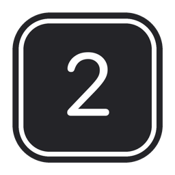
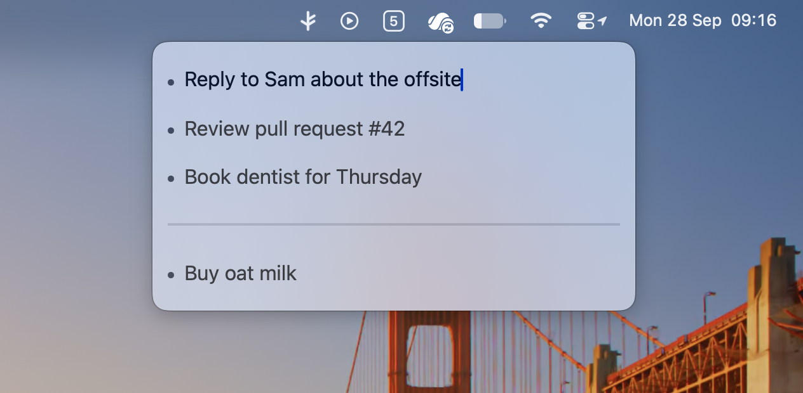

Hem
A small to-do list that lives in your menu bar. Click the badge, type what needs doing, check it off. That's all it does.

How it works
- The badge
Shows how many tasks are left, or a tick when you're done.
- ↩
New task. Press it again on an empty last line to close the list.
- ⌘ ↩
Check off the current task.
- ⌥ ↑ ↓
Move a task up or down.
- ---
Type three dashes for a divider.
- esc
Close the list. Set a global shortcut in Settings to open it from anywhere.
Details
- Native
AppKit and SwiftUI. No Dock icon, no account, no sync.
- Yours
Tasks are kept in a plain JSON file in Application Support.
- History
Checked-off tasks are kept under Completed Tasks in the right-click menu.
- Updates
Signed, notarised, and kept up to date with Sparkle.